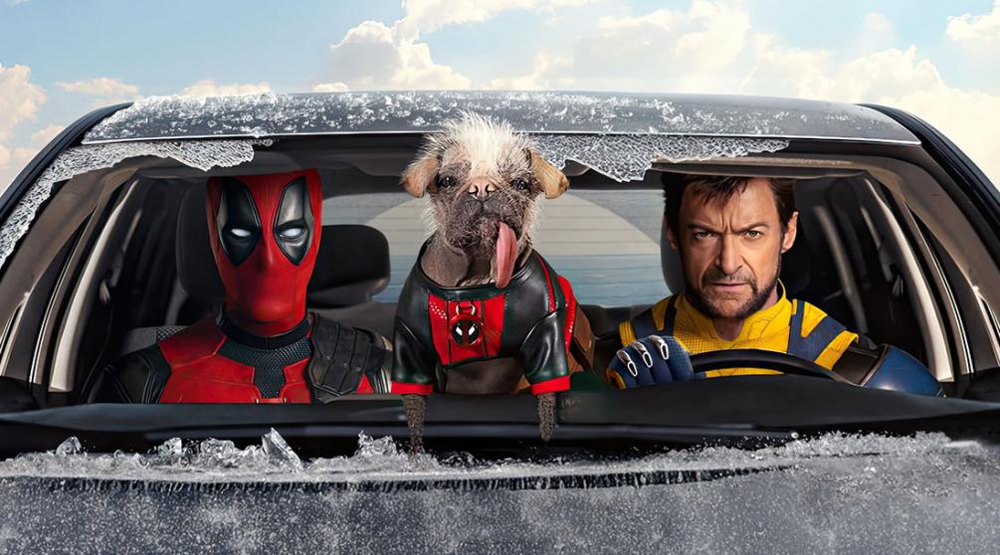

Спаситель Marvel
Это Дедпул, детка! Смотрю, у тебя появилось свободное время, и ты решил посмотреть фильм? А давай-ка я порекомендую тебе несколько афигенных фильмов с охрененным актером в главной роли! Фильмы представлены ниже, дружок! Если фильмы понравятся, а они точно понравятся, оставь лайк и коммент, дружище! Знаешь, я тут не просто так — я обожаю делиться хорошим контентом. Спасибо, дружище! Не знаю, кто ты, но я уже обожаю тебя! И помни: жизнь слишком коротка, чтобы смотреть плохие фильмы. Так что хватай попкорн и готовься к эпичной порции веселья!
Готовься мазаф*кер!
Дедпул
2016 год.1ч.43мин.18+
США
Уэйд Уилсон — наёмник. Будучи побочным продуктом программы вооружённых сил под названием «Оружие X», Уилсон приобрёл невероятную силу, проворство и способность к исцелению. Но страшной ценой: его клеточная структура постоянно меняется, а здравомыслие сомнительно. Всё, чего хочет Уилсон, — держаться на плаву в социальной выгребной яме. Но течение в ней слишком быстрое.
Дедпул 2
2018 год.1ч.55мин.18+
США
Единственный и неповторимый болтливый наемник вернулся! Ещё более масштабный, ещё более разрушительный и даже ещё более голозадый чем прежде! Когда в его жизнь врывается суперсолдат с убийственной миссией, Дэдпул вынужден задуматься о дружбе, семье и о том, что на самом деле значит быть героем, попутно надирая 50 оттенков задниц. Потому что иногда, чтобы делать хорошие вещи, нужно использовать грязные приёмчики.

Дедпул 3
2024 год.2ч.8мин.18+
США
Уэйд Уилсон попадает в организацию «Управление временными изменениями», что вынуждает его вернуться к своему альтер-эго Дэдпулу и изменить историю с помощью Росомахи.
 Эй, вы, любители кино и фанаты поп-культуры! 🎬
Собрались посмотреть новый фильм? Отлично!
Давайте поговорим о том, что вас ждет. Но прежде чем вы погрузитесь в этот кинематографический квест, позвольте мне дать вам несколько советов — от самого крутого супергероя с красным костюмом и черными вставками (да-да, это я, Дедпул!).
Во-первых, запаситесь попкорном. Не просто попкорном, а тем, который вы любите! Сладкий, соленый или даже с маслом — выбор за вами. Главное, чтобы он был хрустящим, а не как старые шутки в фильмах 90-х. 🍿
Во-вторых, настройтесь на волну! Этот фильм может заставить вас смеяться до слез, плакать, как будто вы потеряли последнюю пачку чипсов, или сидеть на краю сиденья, ожидая поворотов сюжета. Не забывайте: если вы не чувствуете себя немного неловко в конце фильма, значит, вы что-то сделали не так.
В общем, готовьтесь к приключению, полному экшена, юмора и, возможно, парочки неожиданных поворотов. И не забывайте: после титров может быть что-то интересное! Так что сидите до конца — это не просто фильм, это опыт!
Удачи вам в этом кинематографическом путешествии! И помните: если что-то пойдет не так — просто позовите меня! Я всегда готов прийти на помощь (или хотя бы на экран). 😎
С любовью и сарказмом,
Ваш любимый антигерой, Дедпул! 🦸♂️